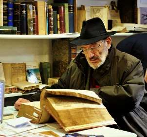

Борис Акунин
Мой календарь
От Джеймса Бонда переходим к Умберто Эко (1932–2016), чей день рождения отмечается сегодня.
Во-первых, потому что Эко был исследователем феномена Джеймса Бонда и мифологии суперменства (одна из его работ так и называется «Миф о супермене»), а во-вторых и в главных, потому что итальянский писатель изменил мою жизнь и может изменить вашу - если вы вдохновитесь его примером.
Умберто Эко научил меня тому, что знаменитую поговорку о «деле» и «потехе» следует трактовать как приказание: дело делом, но обязательно минимум час в день следует заниматься чем-то приятным, для души. И может быть, этот час, который даришь самому себе, в конечном итоге принесет тебе (да и не только тебе) еще больше радости и пользы, чем «дело».
Ну вот, допустим ты серьезный и занятой человек. Ученый-культуролог, профессор, автор кучи мудреных книг, создатель собственной семиотической теории, и прочая, и прочая. Да и лет тебе уже немало, хорошо за сорок.
И вот, при всей своей занятости, ты выделяешь время для того, чтобы сочинять, прости господи, детектив, да такой, какого никогда еще не бывало: для умного, очень начитанного, разбирающегося в медиевистике и семиотике читателя.
Вряд ли Эко при подобной установке надеялся на коммерческий успех, это была просто «потеха», сугубо личное развлечение. Но получился роман «Имя розы», который прочли миллионы людей, причем 90 процентов ничего кроме детективной фабулы там не разглядели, даже не поняли смысл названия, но почувствовали некую магнетическую тайну, спрятанную внутри истории о средневековом монахе-сыщике, и этот магнетизм стал причиной невероятного успеха.
После этого Умберто Эко жил долго и счастливо, соединяя «дело» с «потехой», и это, поверьте, самая завидная доля - когда работа и развлечение суть одно и то же.
На первой фотографии Умберто Эко в тот период жизни, когда он еще не написал «Имя розы».
На второй - уже после. Как говорится, найдите отличие.
Отличие в том, что на первой человек занимается делом. На второй - тоже, но явно пришел с прогулки и сейчас отправится гулять дальше. Потехе время, делу - час.
Писатель считал, что его фамилия Eco является аббревиатурой латинского Ех Caelis Oblatus - «Дарованный Небесами». Тут тоже есть чему поучиться. Относитесь к себе и к своей жизни как к дару небесному, и тогда, может быть, он в вас откроется. Не сам собой, конечно. А может быть, именно в час, отведенный потехе.